CarboSAMY
Automated deep-learning segmentation of soot in TEM images
- Year
- 2026
- Context
- UBC Energy & Aerosol Laboratory
- Tools
- Python · Deep learning · Image processing · TEM
A deep-learning workflow that finds, segments, and measures soot and other carbonaceous particles in electron-microscope images, reducing analysis time by 99.6%.
Why
Transmission electron microscopy (TEM) is the standard way to see the structure of soot aggregates, but measuring them means hand-tracing particles image by image. That slow, subjective step limits how much data a study can use. CarboSAMY automates it end to end and cuts analysis time by 99.6%.
The model
How CarboSAMY turns a raw TEM image into measured particles.
Architecture
A µSAM segmentation model fine-tuned on TEM images and their hand-traced masks, prompted by a YOLO detector that finds and classifies each particle.
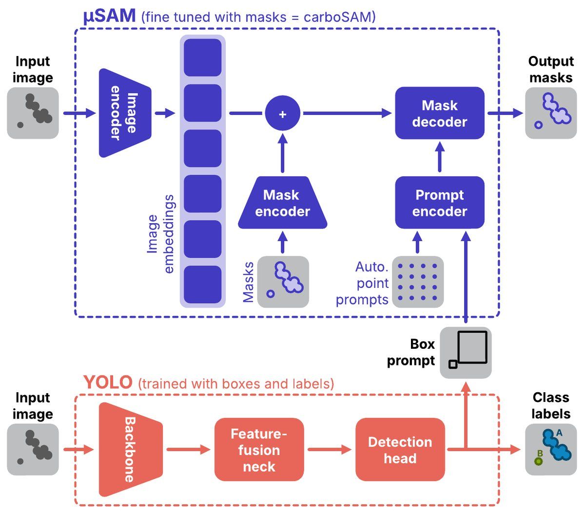
Inference workflow
The same workflow runs at two levels: CarboSAMY-agg segments whole aggregates, and CarboSAMY-pp extracts and sizes the primary particles inside them.
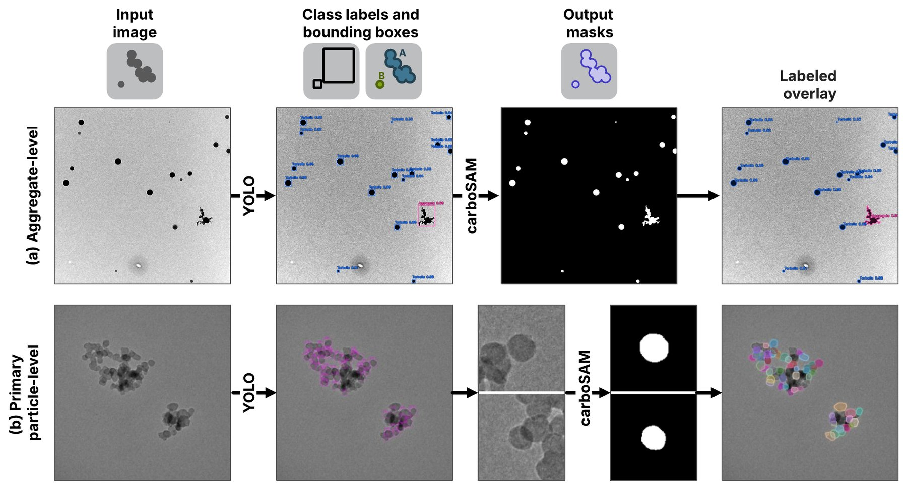
Input and output
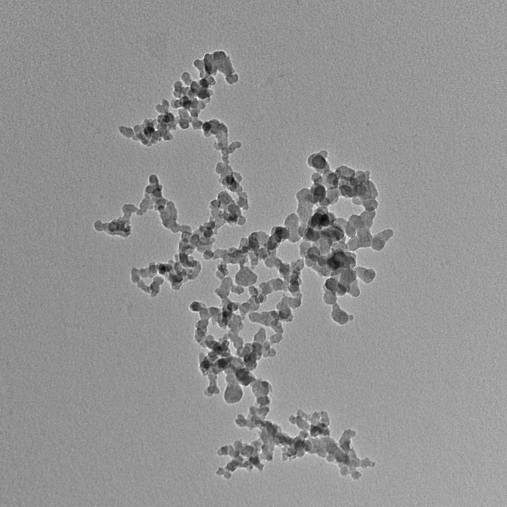
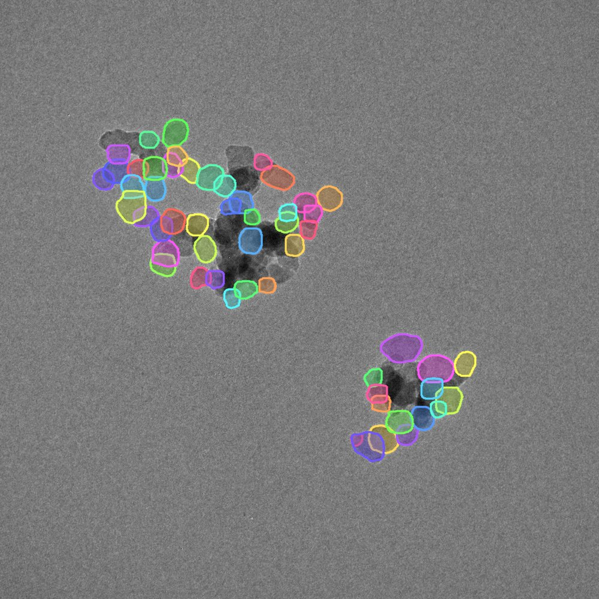
Validation and results
I coordinated a small annotation team that hand-segmented images as ground truth, reviewing consistency, particle identification, and mask quality. CarboSAMY was then compared with manual analysis and existing methods.
Aggregate segmentation
Mean IoU of 93% on typical soot, matching the Carboseg benchmark and well above k-means, and 89% on difficult lacey-carbon grids. Aggregate diameters track manual measurements with under 1% bias.
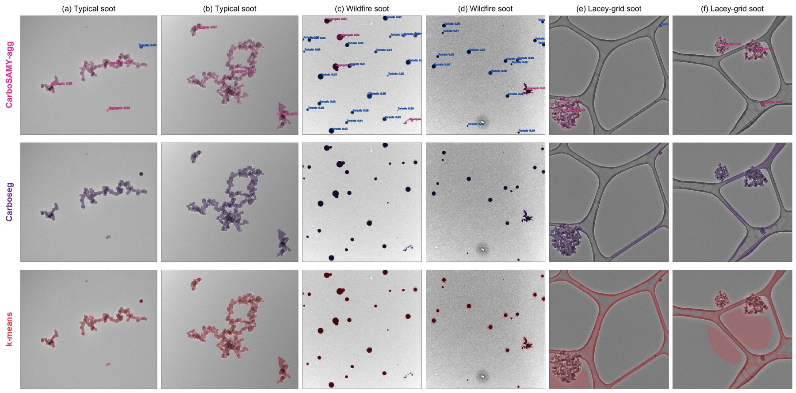
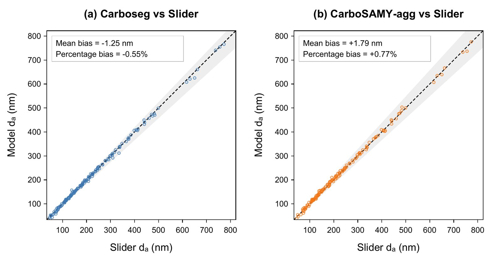
Primary-particle sizing
Primary-particle size bias against manual analysis of +11%, compared with +40% for the circular Hough transform (CHT) and +57% for SAGE.
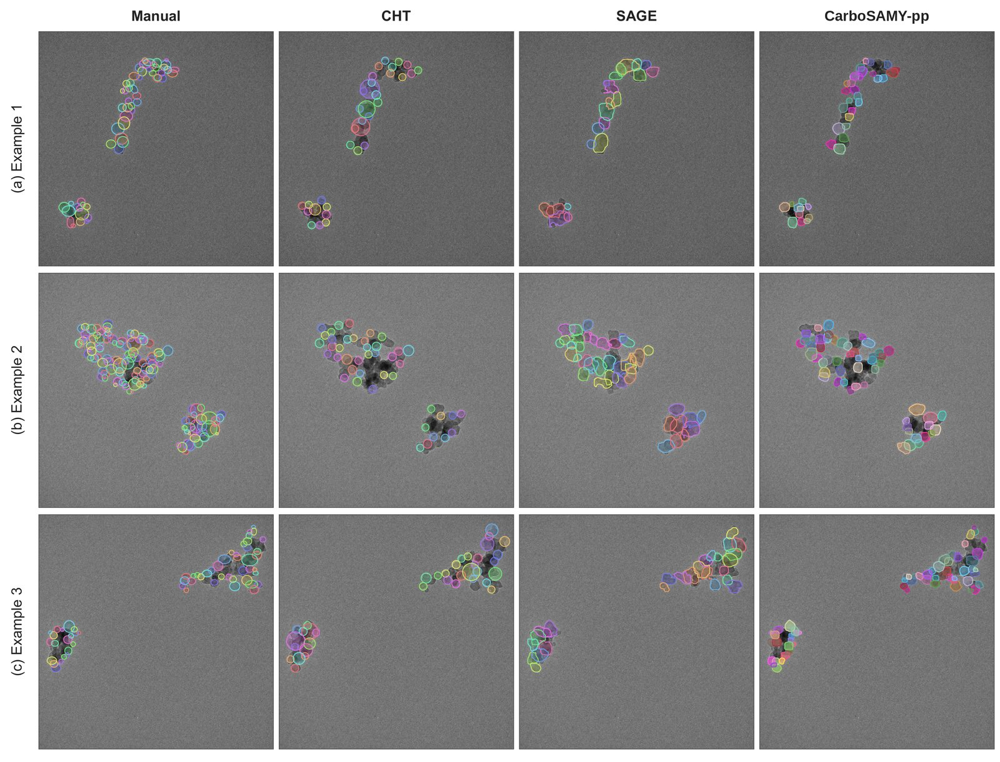
Conferences and publication
Where the work has been presented, in chronological order.
Canadian Aerosol Conference, Ottawa
Jul 2026First poster on the TEM image-analysis techniques behind CarboSAMY.
Manuscript submitted
Oct 2026First-author manuscript submitted to Powder Technology; now under review.
ASME IMECE 2026, Vancouver: second place
Nov 2026The CarboSAMY poster won second place in the Undergraduate Research and Design Expo student poster competition.
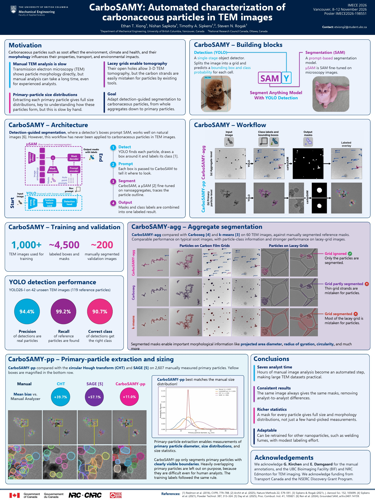
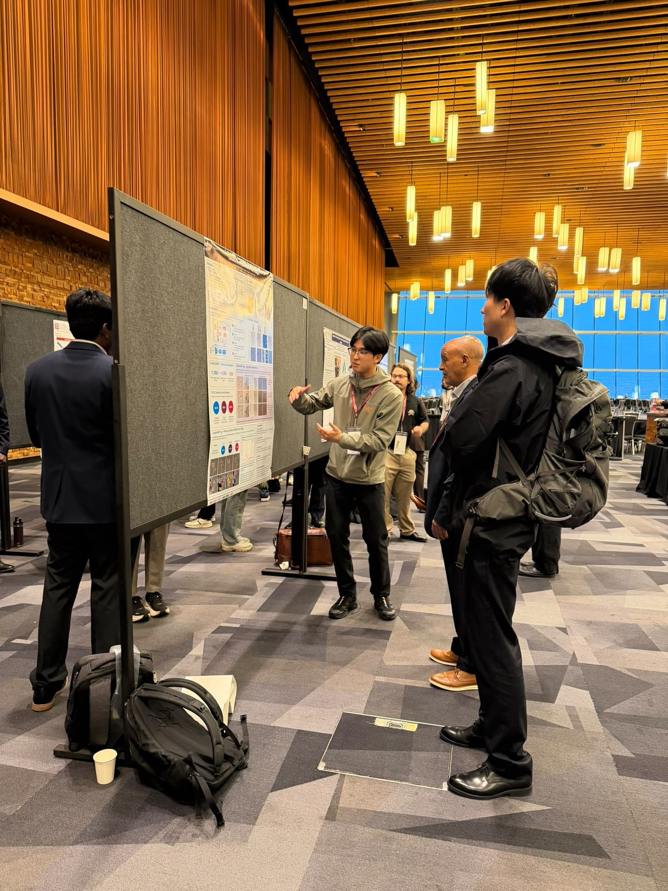
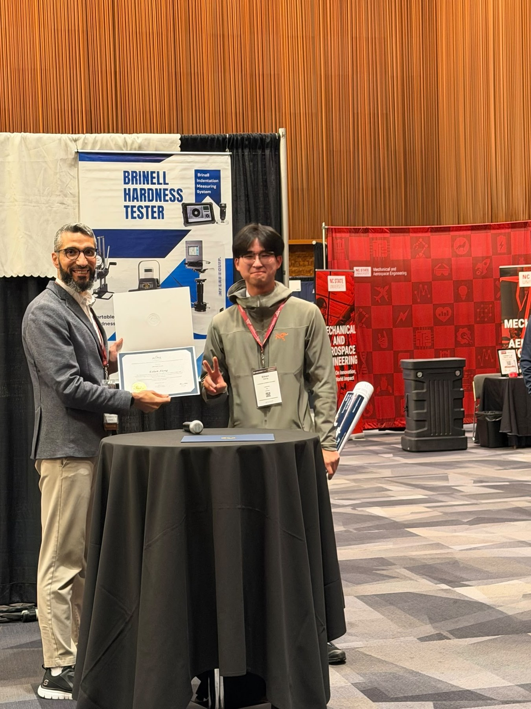
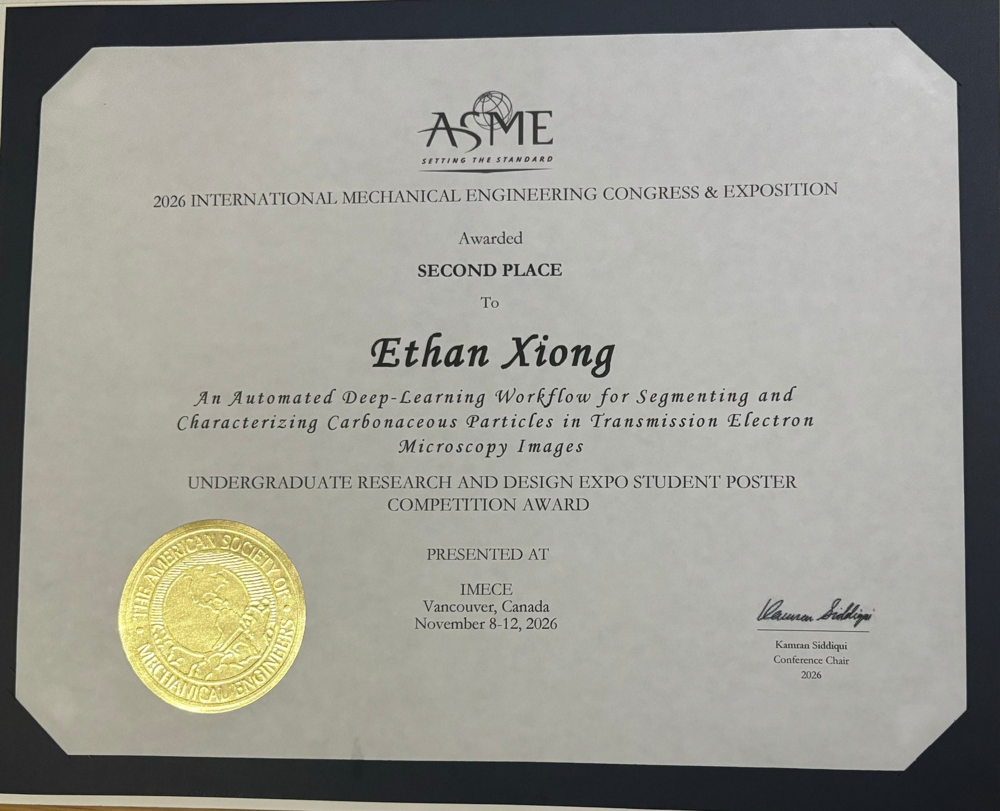